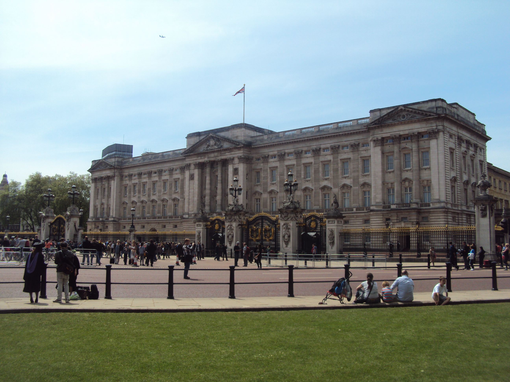
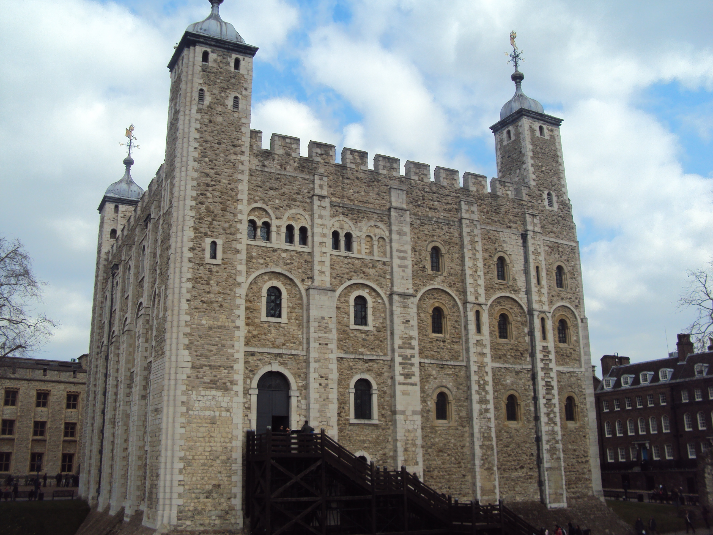
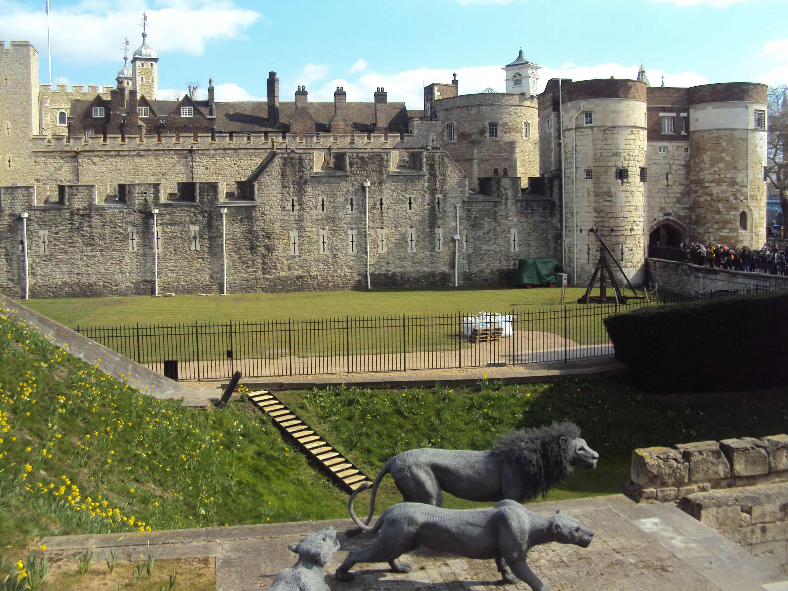
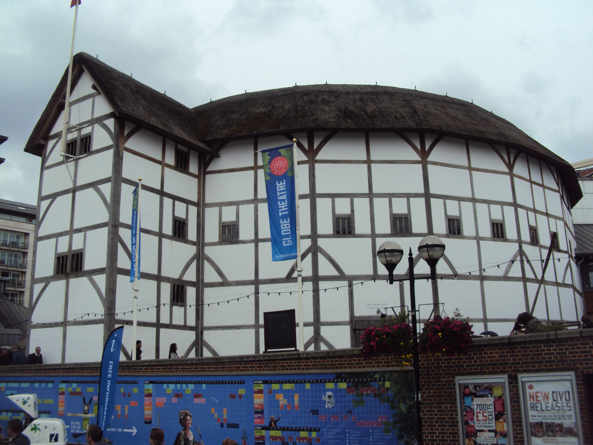
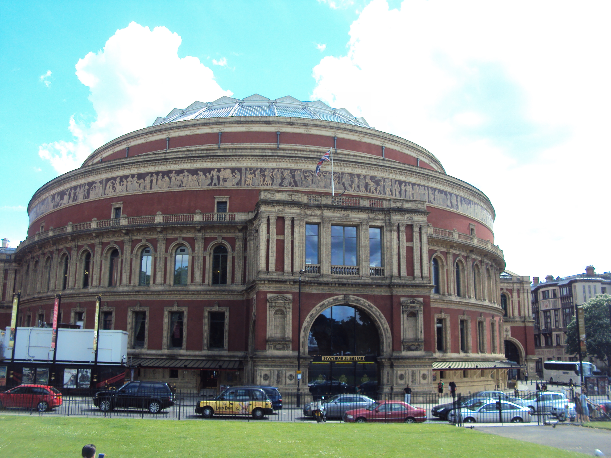
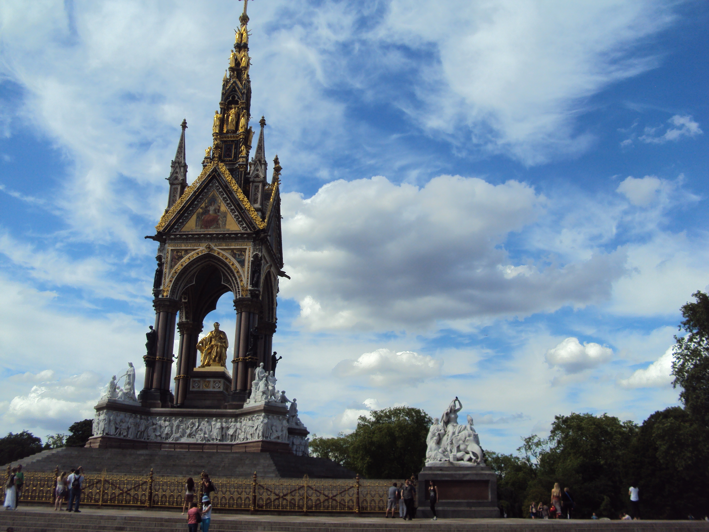
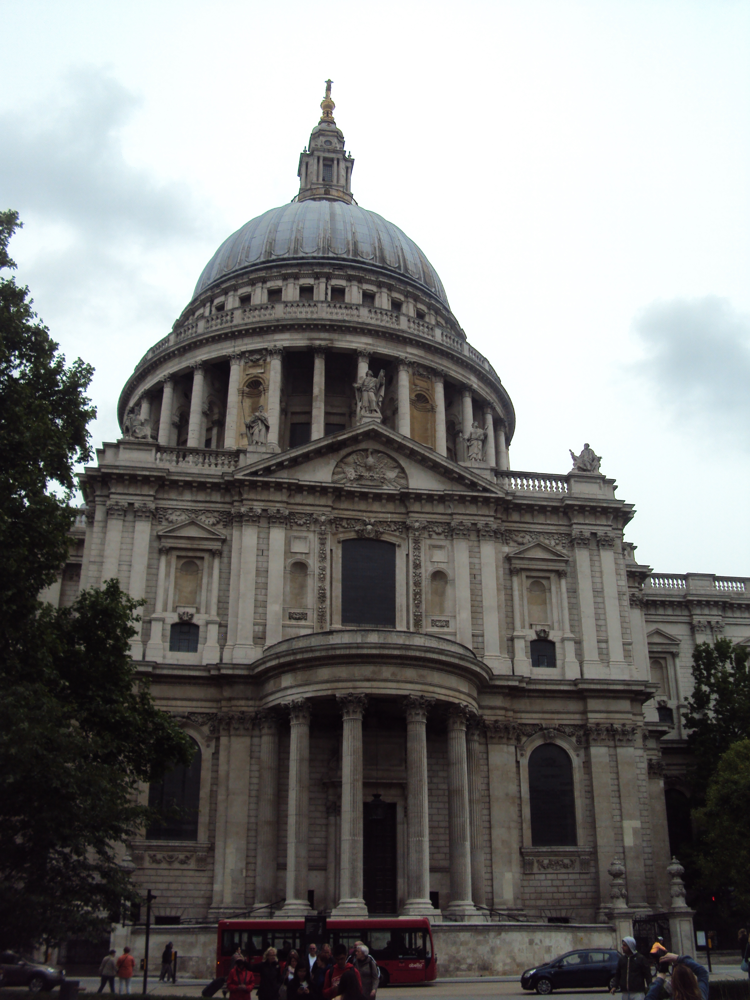
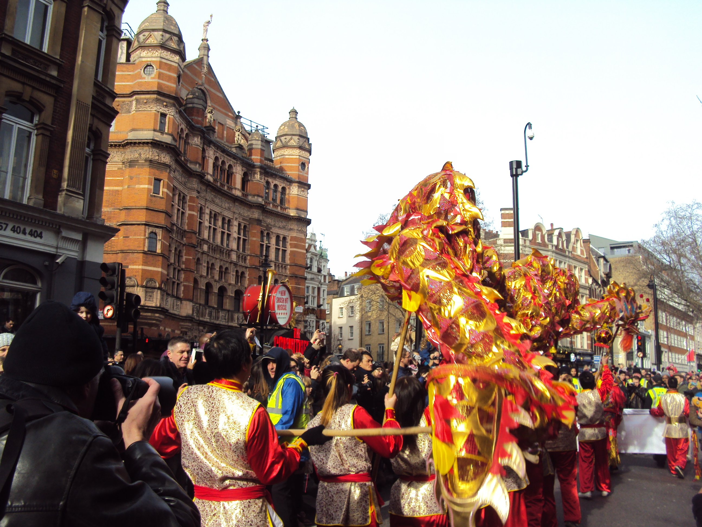
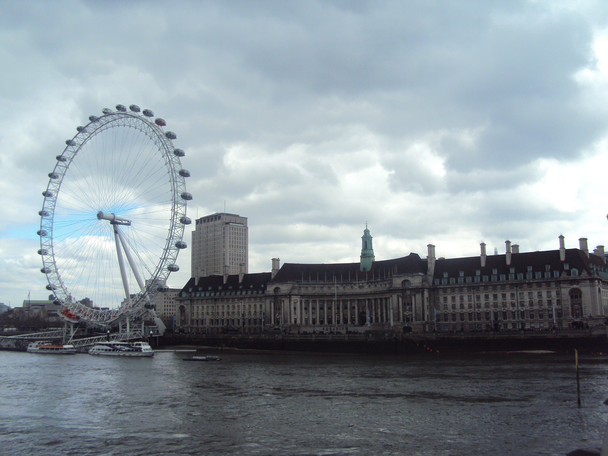
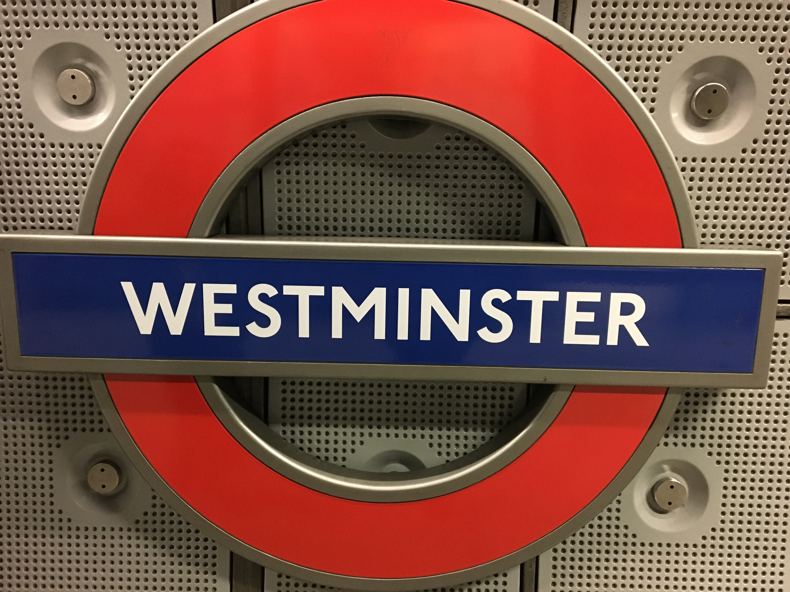

"London is the capital and most populous city of England and the United Kingdom. Standing on the River Thames in the south east of the island of Great Britain, London has been a major settlement for two millennia. It was founded by the Romans, who named it Londinium."
"London's ancient core, the City of London, largely retains its 1.12-square-mile (2.9 km2) medieval boundaries. Since at least the 19th century, "London" has also referred to the metropolis around this core, historically split between Middlesex, Essex, Surrey, Kent and Hertfordshire,which today largely makes up Greater London,a region governed by the Mayor of London and the London Assembly"

"London is a leading global city in the arts, commerce, education, entertainment, fashion, finance, healthcare, media, professional services, research and development, tourism and transportation. It is the world's largest financial centre and has the fifth or sixth largest metropolitan area GDP in the world. London is often regarded as a world cultural capital."

"It is the world's most-visited city as measured by international arrivals and has the world's largest city airport system measured by passenger traffic. It is the world's leading investment destination,hosting more international retailers and ultra high-net-worth individuals than any other city. London's universities form the largest concentration of higher education institutes in Europe. In 2012, London became the first city to have hosted the modern Summer Olympic Games three times."

"London has a diverse range of people and cultures, and more than 300 languages are spoken in the region. Its estimated mid-2016 municipal population (corresponding to Greater London) was 8,787,892, the largest of any city in the European Union and accounting for 13.4% of the UK population. London's urban area is the second most populous in the EU, after Paris, with 9,787,426 inhabitants at the 2011 census. The city's metropolitan area is the most populous in the EU with 14,040,163 inhabitants in 2016, while the Greater London Authority states the population of the city-region (covering a large part of the south east) as 22.7 million. London was the world's most populous city from around 1831 to 1925."

"London contains four World Heritage Sites: the Tower of London; Kew Gardens; the site comprising the Palace of Westminster, Westminster Abbey, and St Margaret's Church; and the historic settlement of Greenwich. Other landmarks include Buckingham Palace, the London Eye, Piccadilly Circus, St Paul's Cathedral, Tower Bridge, Trafalgar Square and The Shard. London is home to numerous museums, galleries, libraries, sporting events and other cultural institutions, including the British Museum, National Gallery, Natural History Museum, Tate Modern, British Library and West End theatres. The London Underground is the oldest underground railway network in the world."

"London's buildings are too diverse to be characterised by any particular architectural style, partly because of their varying ages. Many grand houses and public buildings, such as the National Gallery, are constructed from Portland stone. Some areas of the city, particularly those just west of the centre, are characterised by white stucco or whitewashed buildings. Few structures in central London pre-date the Great Fire of 1666, these being a few trace Roman remains, the Tower of London and a few scattered Tudor survivors in the City. Further out is, for example, the Tudor-period Hampton Court Palace, England's oldest surviving Tudor palace, built by Cardinal Thomas Wolsey c.1515."

"The disused - but soon to be rejuvenated - 1939 Battersea Power Station by the river in the south-west is a local landmark, while some railway termini are excellent examples of Victorian architecture, most notably St. Pancras and Paddington. The density of London varies, with high employment density in the central area, high residential densities in inner London, and lower densities in Outer London."

"The Monument in the City of London provides views of the surrounding area while commemorating the Great Fire of London, which originated nearby. Marble Arch and Wellington Arch, at the north and south ends of Park Lane, respectively, have royal connections, as do the Albert Memorial and Royal Albert Hall in Kensington. Nelson's Column is a nationally recognised monument in Trafalgar Square, one of the focal points of central London. Older buildings are mainly brick built, most commonly the yellow London stock brick or a warm orange-red variety, often decorated with carvings and white plaster mouldings."

"In the dense areas, most of the concentration is via medium- and high-rise buildings. London's skyscrapers, such as 30 St Mary Axe, Tower 42, the Broadgate Tower and One Canada Square, are mostly in the two financial districts, the City of London and Canary Wharf. High-rise development is restricted at certain sites if it would obstruct protected views of St Paul's Cathedral and other historic buildings. Nevertheless, there are a number of very tall skyscrapers in central London (see Tall buildings in London), including the 95-storey Shard London Bridge, the tallest building in the European Union. Other notable modern buildings include City Hall in Southwark with its distinctive oval shape and the British Library in Somers Town/Kings Cross. What was formerly the Millennium Dome, by the Thames to the east of Canary Wharf, is now an entertainment venue called the O2 Arena."

"The London Underground, commonly referred to as the Tube, is the oldest and second longest metro system in the world. The system serves 270 stations and was formed from several private companies, including the world's first underground electric line, the City and South London Railway. It dates from 1863. Over four million journeys are made every day on the Underground network, over 1 billion each year."

"London offers so many things to do, you won't be bored during your trip. You might find useful these tips about London's sightseeing and top attractions to see. So go ahead and read them and start planning your trip."